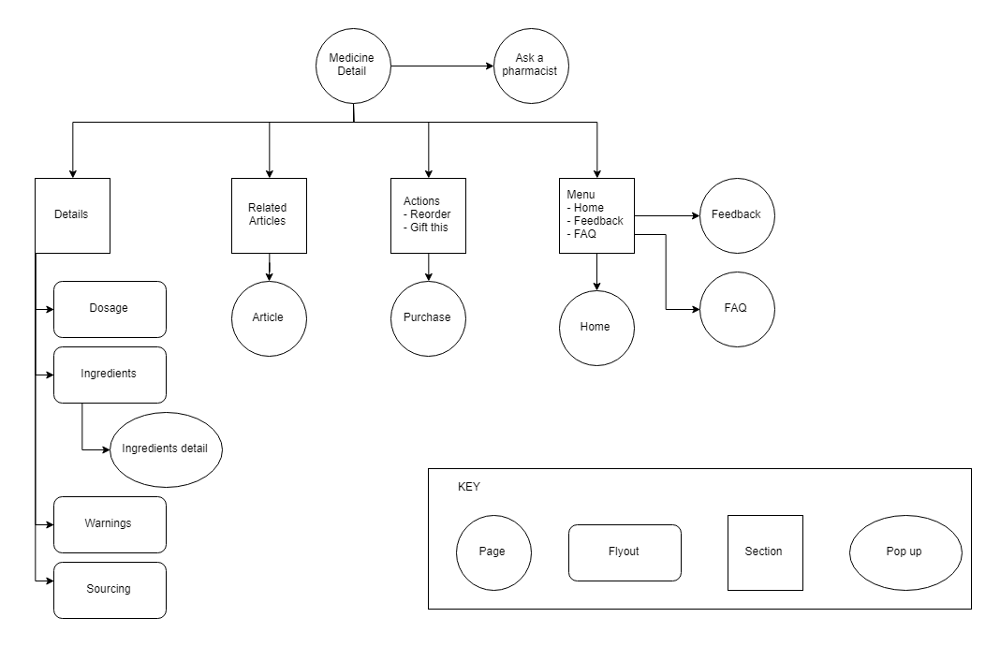
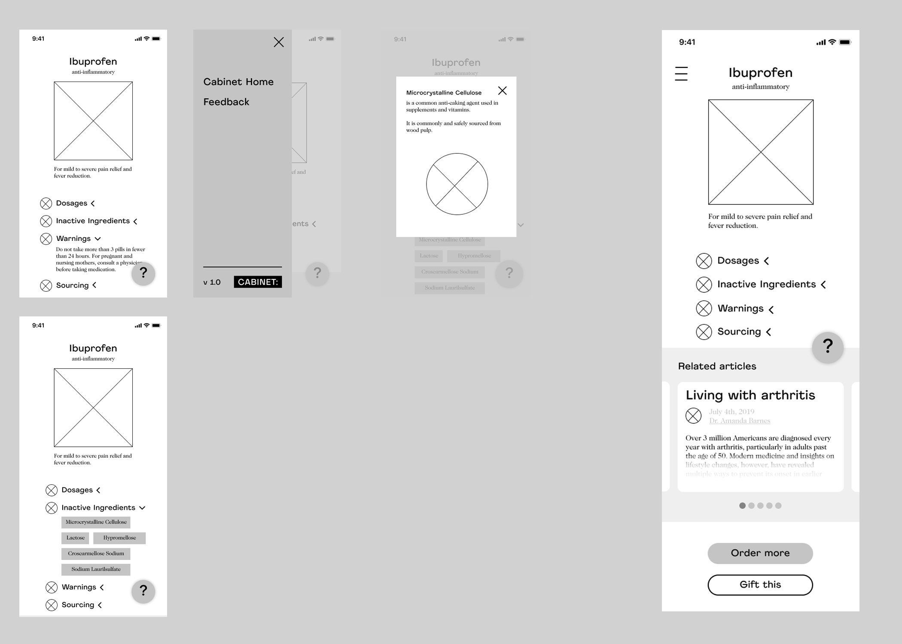

Cabinet is a direct-to-consumer (DTC) company that provides over the counter (OTC) medication to customers through curated kits. Their customized medicine bottles feature near-field technology that allows users to literally tap into; users can tap the bottles with their NFC enabled smartphones to surface a digital site that provides full transparency into the contents, construction, and sourcing of the medication.
As a design consultant, I worked directly with co-founder Russ Gong to create a user journey, distill feedback and data from initial user research, and conceptualize the first version of their NFC digital experience.
The team had already collected initial user feedback from initial interviews with early adopters and targeted ads on social media. I compiled this information into an initial user journey for the process of purchasing OTC medicine. Questions we hoped to answer through this user journey included:
How does the process of purchasing medication exist now?
How does it exist on Cabinet?
What pain points can Cabinet alleviate in this process?
I also created a set of user personas to visualize Cabinet's target user group. Russ and I worked together to identify four personas who shared similar lifestyle and purchasing habits, based on the data we were able to gather from the targeted ads and initial users.
In addition to conducting user research, I conceptualized and designed a digital experience for the NFC bottles that would surface key pieces of information - ingredients, uses, sourcing, etc. - when users tapped the bottles with their phones.
I created a site map to highlight key features followed by wireframes.
A working version of the NFC experience with the tappable bottles.